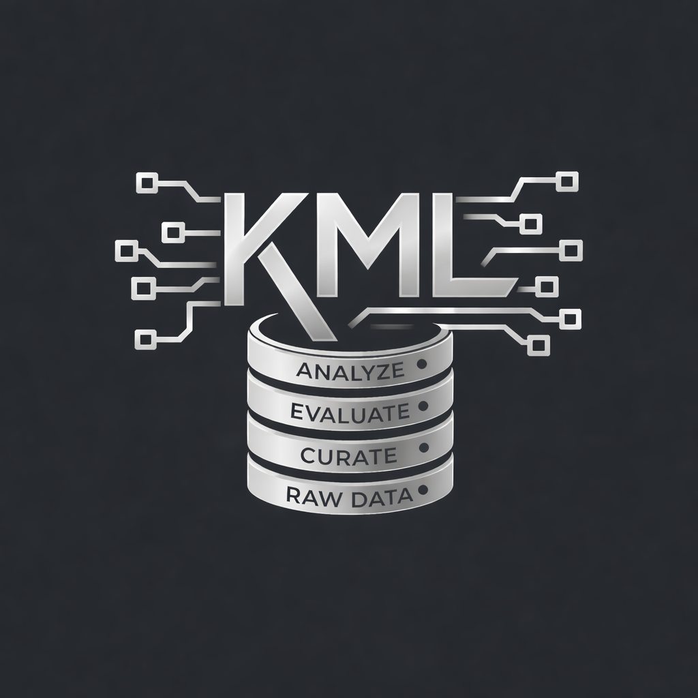

Secure Production REST API
Authenticated service for reliable data access and workflow automation.
- JWT auth + request validation
- Rate limiting + caching
- PostgreSQL schema + migrations
Building production-grade data pipelines, analytical platforms, and decision infrastructure.

Authenticated service for reliable data access and workflow automation.
Daily macro cockpit with regime context and board-pack export.
Transforms news into tagged signals and decision-ready daily summaries.